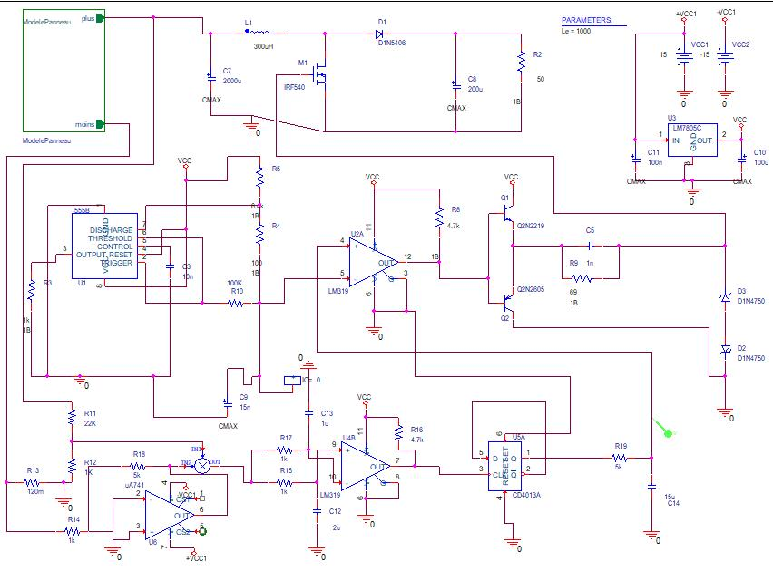
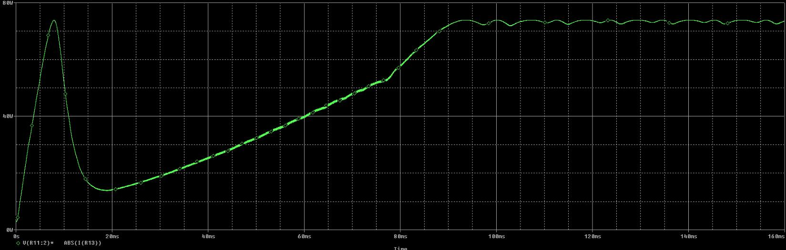
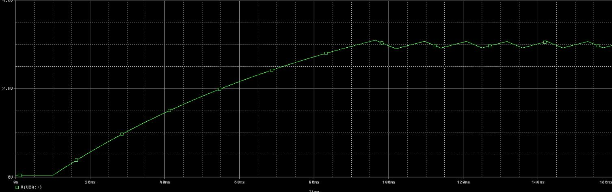

Featured project · Sep — Nov 2025
Système photovoltaïque avec commande MPPT automatique
An analog maximum‑power‑point tracker for a solar panel, built from comparators, RC cells, a triangle oscillator and a flip‑flop, and simulated in OrCAD PSpice. No microcontroller, no code.
- Period
- Sep — Nov 2025
- Software
- OrCAD PSpice
- Power stage
- Boost into 50 Ω
- Result
- ≈73 W held at MPP
A panel gives its best at one point only.
Every point on a panel’s I–V curve gives a different power. The maximum moves with sunlight and temperature, so a fixed load leaves energy on the table. A tracker keeps walking the operating point back to the peak. Try it: change the sun, watch it hunt.
Power P(V)Current I(V)Perturb & observe tracker
Clouds pass: drag it down and the peak drops and slides left.
Hot cells lose voltage, so the peak moves to a lower V.
- Available maximum
- 0W
- At voltage
- 0V
- Tracker delivers
- 0W
- Tracking efficiency
- 0%
Single‑diode model of a 36‑cell module, for illustration. The tracker uses the same rule as the circuit below: step the operating point, keep the direction while power rises, reverse it when power falls. The results further down are from my PSpice run.
Seven analog blocks, one decision: keep going or turn back.
Perturb and observe, done in hardware. Each block below is a part of the PSpice schematic, in the order the signal travels through it.
-
Stage 1Sense
A 22 kΩ / 1 kΩ divider reads the panel voltage. A 120 mΩ shunt reads its current, and a µA741 lifts that small voltage to a usable level.
- R11 · R12
- R13 120 mΩ
- µA741
-
Stage 2Multiply
An analog multiplier turns V × I into one voltage that is proportional to the panel’s power. Everything after this point only looks at power.
- Multiplier
- P = V·I
-
Stage 3Compare
An LM319 compares power now with power a moment ago, held back by an RC cell. Its answer is one bit: did the last step help?
- LM319
- RC delay
- dP/dt sign
-
Stage 4Decide
A CD4013 D flip‑flop remembers the direction. Each time power falls, it toggles, and the tracker turns around.
- CD4013A
- Direction bit
-
Stage 5Integrate
R19 and C14 (5 kΩ, 15 µF) integrate the flip‑flop output into a slowly moving reference, Vref. This trace is the real one from the simulation.
- R19 5 kΩ
- C14 15 µF
- Vref
-
Stage 6Modulate
A 555 timer produces the triangle carrier. A second LM319 compares it with Vref: the higher Vref, the wider each pulse. That is the PWM.
- 555 timer
- LM319
- PWM
-
Stage 7Drive
A 2N2219 / 2N2605 push‑pull stage drives the IRF540 gate. The Boost (300 µH, 1N5406, 200 µF) moves the panel’s operating point and feeds the 50 Ω load.
- IRF540
- L1 300 µH
- 1N5406
The whole tracker on one sheet.
The full schematic
Power stage on top, control below, supplies on the right. Scroll to walk through it block by block.
Boost power stage
L1 300 µH, the IRF540 MOSFET, a 1N5406 diode, 2000 µF on the panel side and 200 µF on the output, into a 50 Ω load. The duty cycle sets the voltage the panel sees.
555 oscillator
A 555 timer with its RC network makes the triangle carrier the PWM comparator needs.
PWM and gate drive
An LM319 compares Vref with the triangle. Its output drives the 2N2219 / 2N2605 push‑pull pair, which charges and discharges the MOSFET gate quickly. 1N4750 zeners clamp the gate.
Sensing and power
The divider and the 120 mΩ shunt with its µA741 feed the multiplier, which outputs a voltage proportional to P = V × I.
The decision
The second LM319 compares power with its RC‑delayed copy. The CD4013 flip‑flop holds the direction, and R19 / C14 integrate it into Vref.
Supplies
An LM7805 regulator for the logic and ±15 V rails for the comparators and the op‑amp.

| Ref. | Value | Role |
|---|---|---|
| L1 | 300 µH | Boost inductor |
| M1 | IRF540 | Power MOSFET, the switch the PWM drives |
| D1 | 1N5406 | Boost diode |
| C7 · C8 | 2000 µF · 200 µF | Panel‑side and output capacitors |
| R2 | 50 Ω | Load |
| R13 | 120 mΩ | Current shunt |
| U1 | 555 | Triangle oscillator |
| U2 · U4 | LM319 | PWM comparator · power comparator |
| U5 | CD4013A | D flip‑flop, direction memory |
| U6 | µA741 | Shunt amplifier |
| Q1 · Q2 | 2N2219 · 2N2605 | Push‑pull gate driver |
| R19 · C14 | 5 kΩ · 15 µF | Integrator that builds Vref |
| U3 | LM7805C | 5 V regulator |
The proof is in the trace.
Both curves are redrawn from my PSpice run, 0 to 160 ms. Scroll to play the simulation.
t = 0.0 msP = 0.0 WVref = 0.00 V
Start‑up 0 – 19 ms
The capacitors charge and the panel sweeps from short circuit to open circuit. On the way it crosses its true maximum, 73.6 W at 7.8 ms, then power falls to 14 W near open‑circuit voltage.
Tracking 10 – 92 ms
From 10 ms the integrator ramps Vref, the duty cycle grows and the Boost pulls the panel back down its curve. Power climbs from 14 W to 72 W in about 75 ms.
Locked 92 ms →
Vref turns into a 2.9–3.1 V triangle with a period of about 11 ms: the flip‑flop reverses every time power dips. Power holds at about 73 W, with roughly ±1 W of ripple.
It found the real peak.
The power it holds in steady state, about 73 W, matches the 73.6 W the panel showed when the start‑up sweep crossed its maximum. The tracker settles on the panel’s actual maximum power point, and the small triangle on Vref is perturb and observe doing exactly what it should.


What I built, step by step.
- Modelled a photovoltaic module and analysed its electrical behaviour, Vpv and Ipv.
- Designed a DC‑DC Boost converter to match the panel’s impedance to the load.
- Built an analog MPPT from comparators, RC circuits, a triangle oscillator and sequential logic.
- Generated the PWM signal that drives the power MOSFET.
- Checked that the tracker follows the maximum power point as irradiance and load change.
Skills
- OrCAD PSpice
- OrCAD
- Power Electronics
- Photovoltaics
- Solar PV Design
- Analog Circuit Design
- Power Electronics Design